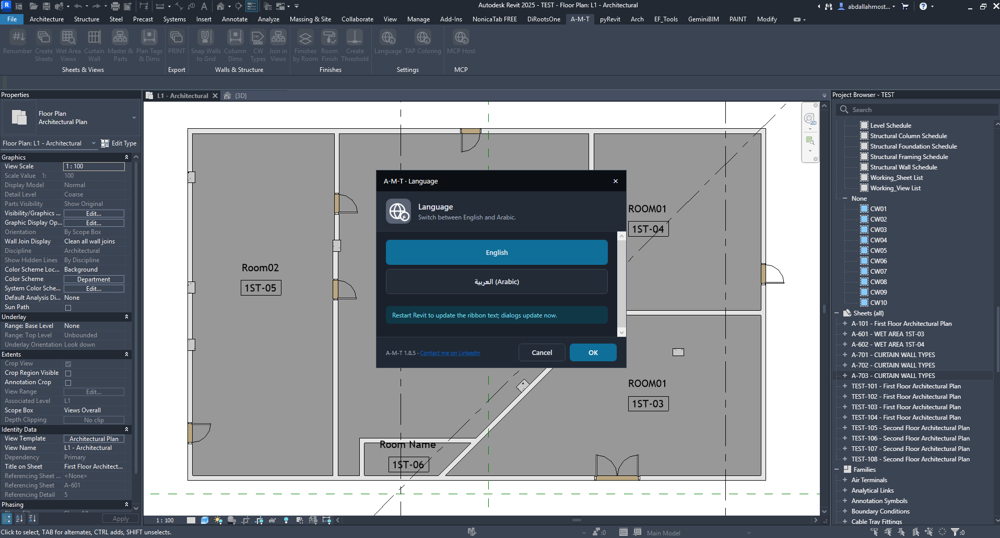

Language
Switch the A-M-T interface between English and Arabic.
SettingsInterface languageHow the command works
Use the Language command to choose the display language for A-M-T ribbon labels, dialogs and messages. The selection is applied from the language dialog; restarting Revit refreshes the ribbon text.
Run Language from the A-M-T ribbon.
Select English or العربية (Arabic).
Press OK to apply the selection.
Restart Revit to update ribbon text.
Choose your interface language
Displays A-M-T command names, dialog labels and messages in English.
Displays the supported A-M-T interface labels and messages in Arabic.

Set and confirm the language
The dialog presents two language choices. The currently highlighted option is selected. Choose the required language, then click OK to confirm or Cancel to leave without applying a new choice.
The note in the dialog explains the refresh behavior: dialogs update immediately, while ribbon text updates after restarting Revit.
Expected result
A-M-T command labels and messages use the selected language. If the ribbon still displays the previous language, close and restart Revit to refresh it.
Quick checklist
Before finishing, confirm that you have:
- Opened Language from the A-M-T ribbon.
- Selected the intended language.
- Clicked OK to confirm.
- Restarted Revit if you need the ribbon text to refresh.